Graphical diagnostics¶
R listing:
require(stats)
require(graphics)
## Analysis of the life-cycle savings data
## given in Belsley, Kuh and Welsch.
LifeCycleSavings <- read.table('LifeCycleSavings.csv', header=TRUE, sep=",")
lm.model1 <- lm(sr ~ pop15 + pop75 + dpi + ddpi , data=LifeCycleSavings)
plot(lm.model1 , which =1:6)
lm.model2 <- lm(sr^4 ~ pop75 + dpi , data=LifeCycleSavings)
plot(lm.model2 , which =1:6)
With OpenTURNS:
from openturns.viewer import View
import openturns as ot
import otlm
import pandas as pd
# Data is available from R datasets, and can be downloaded from
# https://vincentarelbundock.github.io/Rdatasets/csv/datasets/LifeCycleSavings.csv
#
# First column in this CSV file is country name, use
# pandas to easily filter it out.
data = pd.read_csv("LifeCycleSavings.csv", index_col=0)
sample = ot.Sample(data.values)
sample.setName("LifeCycleSavings")
sample.setDescription(["sr","pop15","pop75","dpi","ddpi"])
sr = sample[:,0]
pop15 = sample[:,1]
pop75 = sample[:,2]
dpi = sample[:,3]
ddpi = sample[:,4]
# model1
outputSample = sample[:,0]
inputSample = sample[:,1:5]
algo1 = otlm.LinearModelAlgorithm(inputSample, outputSample)
result1 = algo1.getResult()
analysis1 = otlm.LinearModelAnalysis(algo1.getResult())
for plot in ["drawResidualsVsFitted", "drawScaleLocation", "drawQQplot",
"drawCookDistance", "drawResidualsVsLeverages", "drawCookVsLeverages"]:
graph = getattr(analysis1, plot)()
View(graph)
# model2
f = ot.Function('x','x^4','y')
outputSample = f(sr)
inputSample = pop75
inputSample.stack(dpi)
algo2 = otlm.LinearModelAlgorithm(inputSample, outputSample)
result2 = algo2.getResult()
analysis2 = otlm.LinearModelAnalysis(algo2.getResult())
for plot in ["drawResidualsVsFitted", "drawScaleLocation", "drawQQplot",
"drawCookDistance", "drawResidualsVsLeverages", "drawCookVsLeverages"]:
graph = getattr(analysis2, plot)()
View(graph)
| Model 1 - R | Model 1 - OT | Model 2 - R | Model 2 - OT |
|---|---|---|---|
| 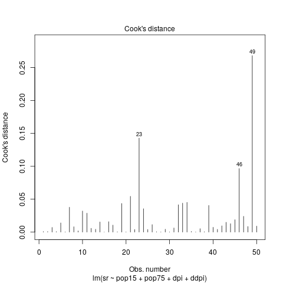 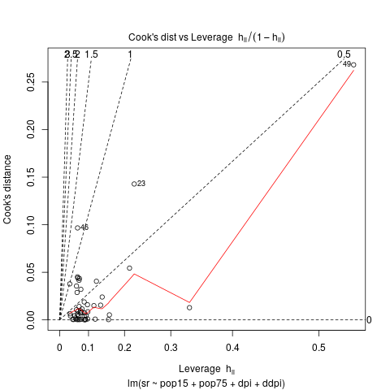 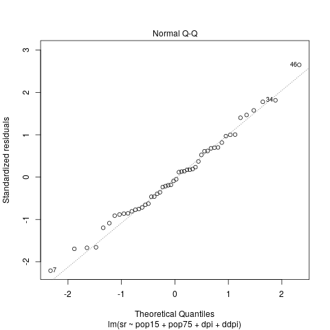 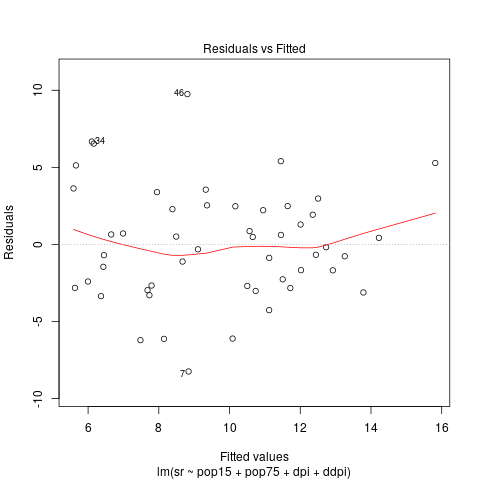 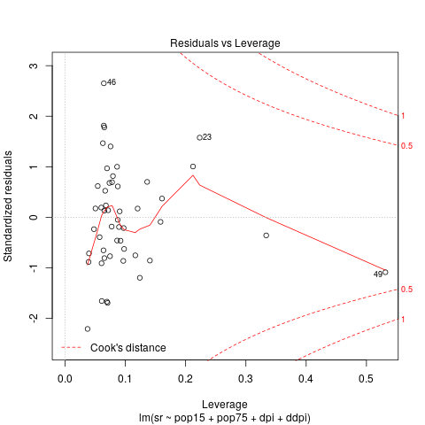 | 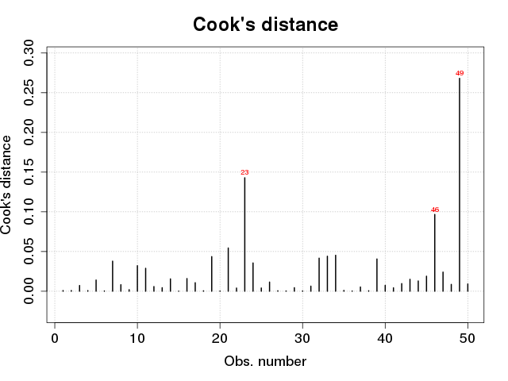 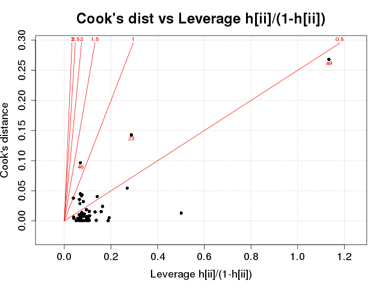 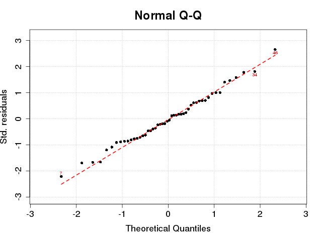 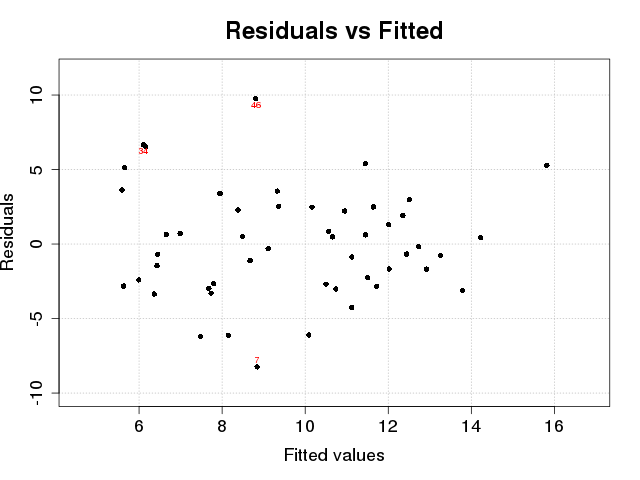 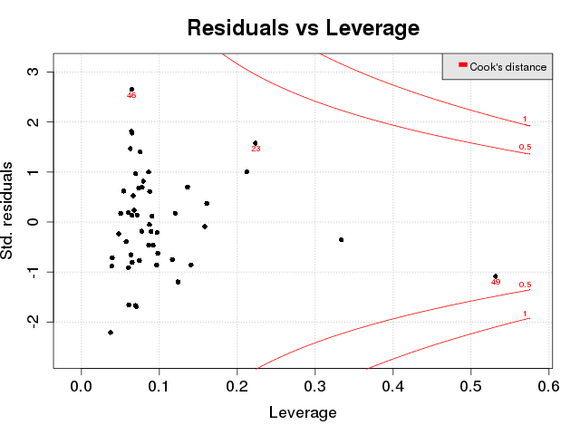 | 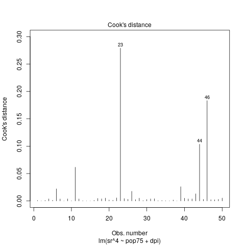 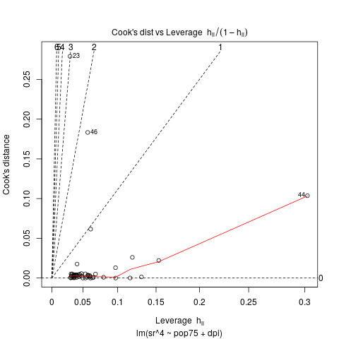 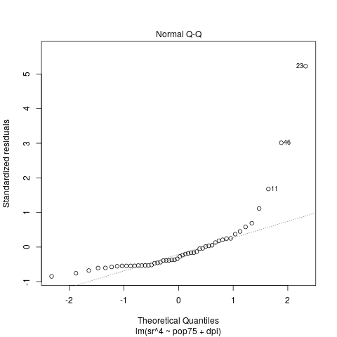 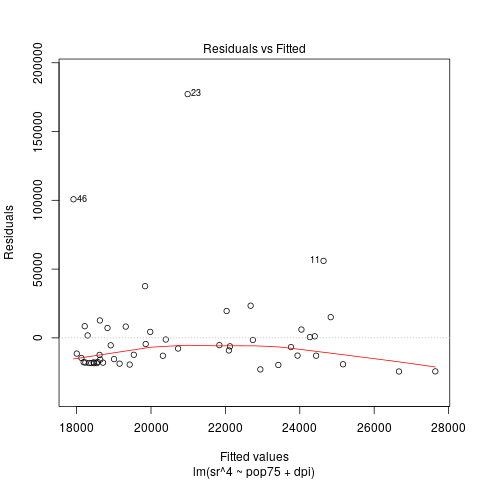 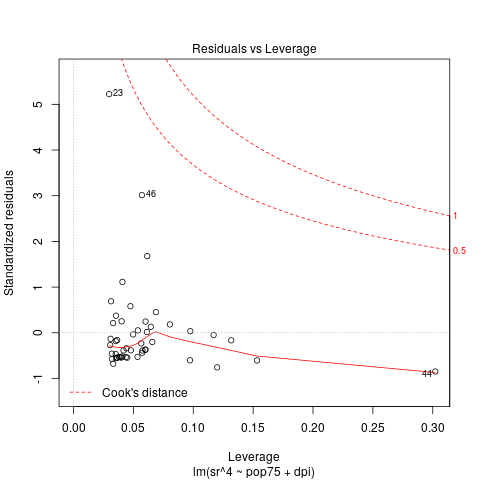 | 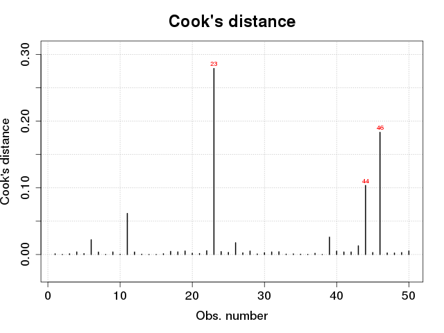 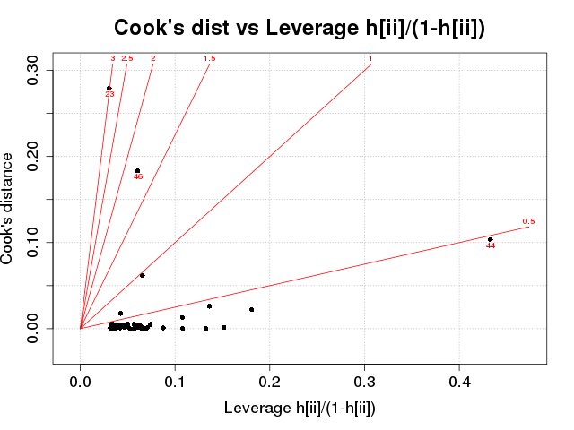 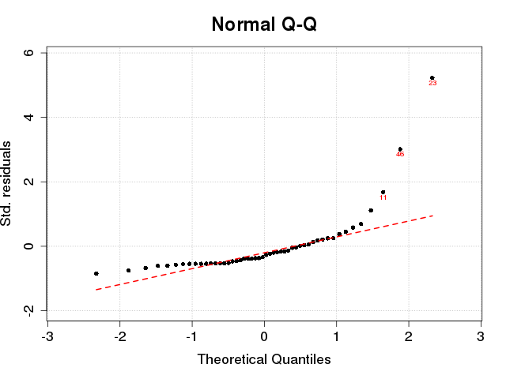 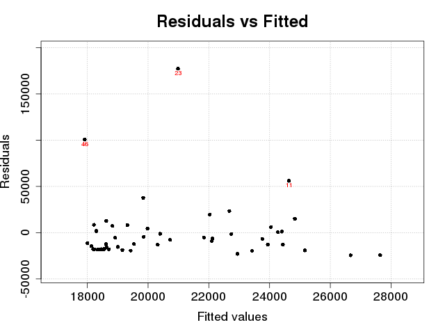 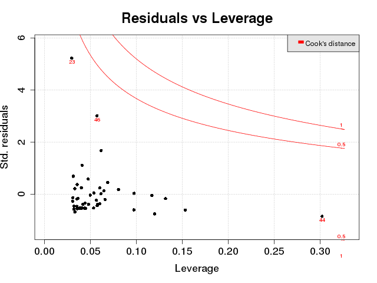 |
{kind=link}
{kind=link}
{kind=link}
{kind=link}
{kind=link}
{kind=link}
{kind=link}
{kind=link}
{kind=link}
{kind=link}
{kind=link}
{kind=link}
{kind=link}
{kind=link}
{kind=link}
{kind=link}
{kind=link}
{kind=link}
{kind=link}
{kind=link}